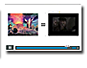
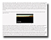
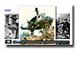
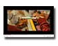
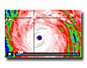
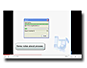
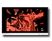

| "Aladdin and
Blow" By Austin Cooper Austin Cooper reports that his experience in the class changed his thinking about composition; here is his mashup. |
|
|  |
"Ely &
Elija" By Sarah Brady In her portfolio reflection, Sarah Brady discusses this screencast on The Road. |
|  |
"Web Essay
Screencast" By Sean Mattio Sean Mattio reflects on composing his Web essay. |
|  |
"Watchmen & Vietnam Screencast" By Katie Meyer Katie Meyer's essay on Watchmen. |
|  |
"My Precious" By Jackclyn Ngo Jackclyn Ngo's mashup of Juno and The Lord of the Rings. |
|  |
"The Road Down Katrina" By Austin Shaw Austin Shaw's screencast on The Road. |
 |
"The Darko
Side of Harry Potter" By Sydney Stegall Sydney Stegall's mashup of The Sorcerer's Stone and Donnie Darko. |
|  |
"This is what
I did in my portfolio" By Hannah Easley Hannah Easley reflects on composing mashups and screencasts. |
|  |
"All the
Heroes" By Kelley Wollman Kelly Wollman's screencast on Watchmen.
|